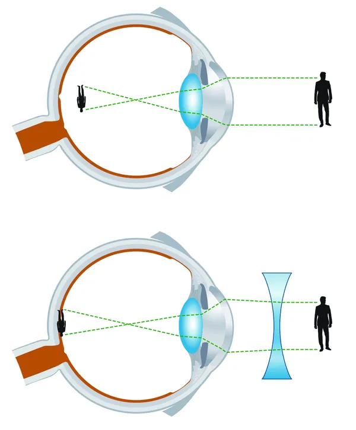
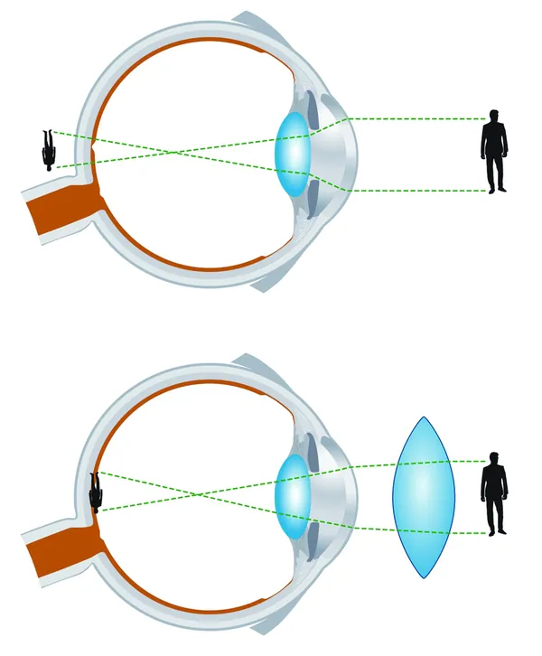
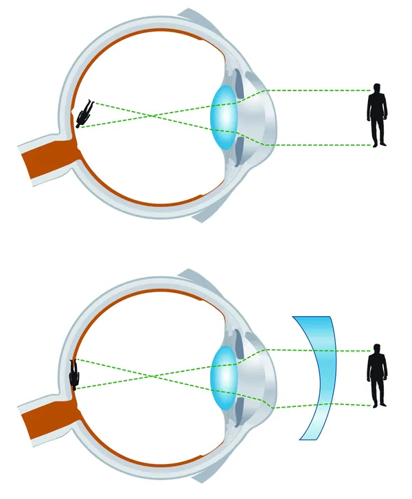
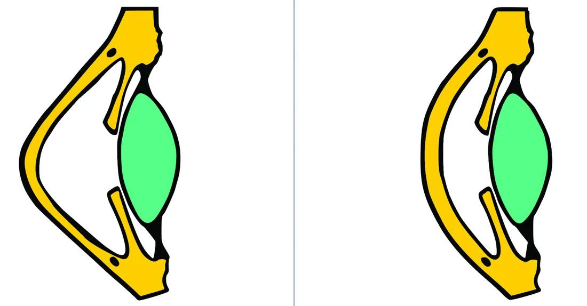
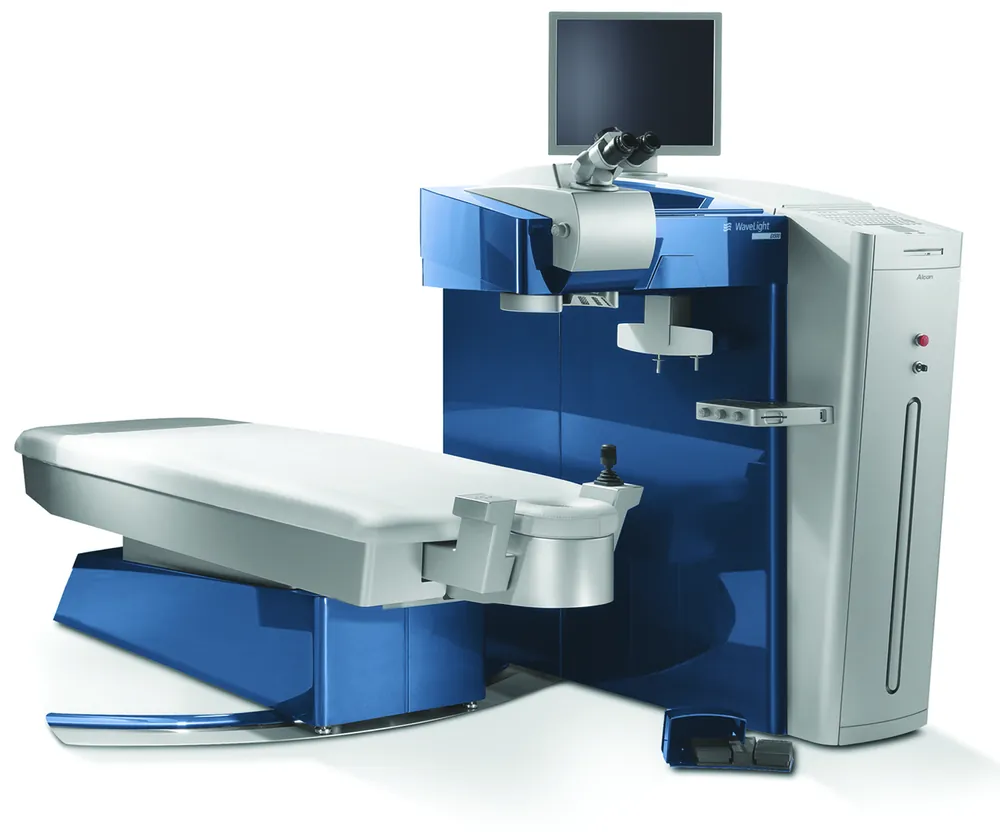
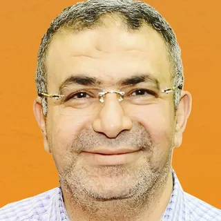
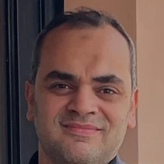
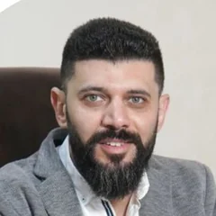
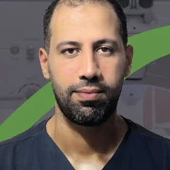

ICL: عدسة أمام عدسة العين
- تُزرع خلف القزحية وأمام عدسة العين الطبيعية، وتبقى عدسة العين في مكانها.
- تصحح قصر النظر العالي والاستجماتيزم.
- تناسب من لا يناسبهم الليزك بسبب رقة القرنية أو ارتفاع درجة النظر.
- يمكن إزالتها أو تغييرها إذا احتاج الأمر.
تصحيح قصر النظر وطول النظر والاستجماتيزم بالليزك، بعد فحص القرنية بالبنتاكام وكشف الاستشاري لتحديد مدى ملاءمة العين للعملية.
احجز الآن
صعوبة في رؤية الأجسام البعيدة وتفاصيلها، مع رؤية الأجسام القريبة بوضوح.

صعوبة في رؤية الأجسام القريبة بوضوح، مع رؤية الأجسام البعيدة بشكل أوضح قليلاً.

ينتج عن عدم استدارة القرنية بشكل كامل، فتظهر الصور القريبة أو البعيدة مشوشة.

في المياه البيضاء تفقد عدسة العين صفاءها وتصبح معتمة، فتظهر الحدقة بلون أبيض بدل الأسود.
العلاج إزالة العدسة المعتمة وزراعة عدسة جديدة مكانها، ويحدد الطبيب نوع العدسة المناسب بعد الفحوصات.
احجز كشف الاستشاريعدسة تُزرع داخل العين أمام عدسة العين الطبيعية، من غير إزالتها.
عدسة تُزرع مكان عدسة العين الطبيعية بعد إزالتها.
لتصحيح النظر عند من لا يناسبهم الليزك. يحدد الطبيب نوع العملية والعدسة بعد الفحوصات.
| ICL | IOL | |
|---|---|---|
| مكان العدسة | أمام عدسة العين الطبيعية | مكان عدسة العين الطبيعية |
| عدسة العين الطبيعية | تبقى في مكانها | تُزال |
| تُستخدم في | قصر النظر العالي والاستجماتيزم | المياه البيضاء وطول النظر العالي |
| إزالة العدسة لاحقاً | ممكنة | عدسة دائمة |
الفحوصات هي التي تحدد نوع العدسة المناسب لحالتك. احجز كشف الاستشاري
في القرنية المخروطية تَرِقّ القرنية وتبرز للأمام على شكل مخروط، فيضعف النظر ويزيد الاستجماتيزم. تثبيت القرنية يقوّي ألياف القرنية ليوقف تقدّم الحالة.
كاميرا تدور أمام العين وتصوّر القرنية، لتقيس سمكها وانحناء سطحيها الأمامي والخلفي.
ارتفاع ضغط العين يضر العصب البصري تدريجياً، وغالباً من غير أعراض في البداية، لذلك قياس الضغط بانتظام هو الطريقة لاكتشافها مبكراً.
كشف نظر الطفل لقياس قوة الإبصار ومعرفة احتياجه لنظارة، واكتشاف الحول وكسل العين مبكراً.
الحول اختلاف اتجاه العينين. الجراحة تعدّل عضلات العين لتضبط اتجاهها.
كشف عيون شامل مع استشاري لتشخيص الحالة وتحديد العلاج أو العملية المناسبة.
كشف عيون يشمل قياس النظر ومقاس النظارة.
فحص الشبكية والعصب البصري.
قياس النظر وتحديد مقاس النظارة أو العدسات اللاصقة المناسبة.
احجز المقاسمراجعة بعد الكشف أو العملية في موعد يحدده الطبيب.
احجز المتابعة
جهاز إكسيمر ليزر نستخدمه في المركز لعمليات الليزك السطحي PRK، والليزك LASIK بمشرط موريا Moria SBK، والليزك السطحي بدون لمس Trans-PRK. يعمل بنظام النقطة الطائرة (Flying spot)، فيعيد تشكيل سطح القرنية بنبضات ليزر صغيرة متتالية حسب قياسات عين كل مريض.
المصدر: الشركة المصنّعة Alcon، وملخص موافقة هيئة الغذاء والدواء الأمريكية FDA.

استشاري أول

د. محمد عبدالرحيماستشاريالإثنين من 11 صباحاً حتى 1 ظهراً
د. أحمد عيسى الجناينياستشاري طب وجراحة العيون، استشاري إزالة المياه البيضاء وتصحيح الإبصار بالليزركل المواعيد في فرع الكشف والفحوصات.

د. سعيد مجديأخصائي طب وجراحة العيون، إزالة المياه البيضاء بالفاكو وتصحيح الإبصار بالليزرالأحد والثلاثاء من 12 ظهراً حتى 6 مساءًكل المواعيد في فرع الكشف والفحوصات.
احجز كشف الأخصائي3 ش بطرس، أعلى توكيل LG، الدور الأول
علي بك الكبير من الحلو، مستشفى الشروق، الدور الثاني، مركز عيون الشروق